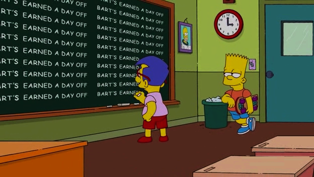

Anote as informações necessárias em um pedaço de papel. Inclua fórmulas, palavras-chave, termos de vocabulário, datas, definições, nomes, conjugações de verbos etc.
Escreva ou imprima as informações de forma correta. Use letra legível e em tamanho adequado (nem muito grande, nem muito pequeno). Apesar de querer incluir tudo o que for possível em uma folha pequena, lembre-se do seguinte: se as fontes forem minúsculas, você vai ter que fazer mais força para lê-la e, assim, ficar exposto. Além disso, se possível, digite e imprima a folha para reduzir as chances de o professor deduzir que foi você que a preencheu à mão.
Copie o conteúdo. Essa estratégia é mais comum em provas de português. Copie as palavras que você não souber escrever direito no papel e guarde-o no colo ou na manga. Tenha bastante cuidado, pois o método é perigoso.
Esconda a folha. Experimente estes métodos
Cole usando o próprio corpo: em vez de anotar as respostas em uma folha impressa ou escrita à mão, anote tudo na própria pele. Use o antebraço (se for homem) e a coxa (se for mulher). Essas opções são legais porque você pode usar um vestido ou uma camiseta de manga longa para disfarçar e não parecer óbvio. Escolha um ponto que só seja visível para você mesmo.
Cole usando uma garrafa d'água: imprima as colas em um pedaço de papel que tenha a mesma cor que o rótulo da garrafinha. Cole-o por cima desse rótulo virado na sua direção. Tente imitar o estilo de escrita da embalagem para disfarçar.
Cole usando um fichário: se você tem um fichário com um "bolso" na frente, use-o para guardar a cola. Ponha-o debaixo da carteira e dê uma olhada quando ninguém estiver prestando atenção. Só tenha muito cuidado, ainda mais se tiver que fazer barulho.
Cole usando uma calculadora: esta opção é comum para quem está fazendo provas de matemática, já que essa é a única oportunidade de colar sem levantar suspeitas. Anote fórmulas e informações entre a parte traseira e a tampa da calculadora.
Cole com um método alternativo com a calculadora: se você tem uma calculadora gráfica, salve as fórmulas matemáticas nela. Depois, arquive as informações para conseguir acessá-las mesmo que o professor peça para você esvaziar a memória RAM. Desarquive-as durante a prova e, por fim, limpe a memória de novo. Isso também dá certo se a escola disponibiliza calculadoras, já que nenhum professor ou aluno vai consultar o arquivo. Por fim, se necessário, pesquise como fazer esse processo.
Cole usando uma pilha de papéis: esconda a folha da cola em um lugar separado da prova para não ser pego em flagrante. Você pode guardá-la no banheiro, na cadeira de alguém etc.
Esconda as colas sob a manga de uma camisa de manga longa: este também é um bom método, já que o professor não vai procurar nesse local. Tire a folha e consulte a matéria quando ele não estiver olhando.
Usando o método do parceiro
Sente-se atrás de alguém de quem possa colar. Escolha algum colega que saiba o conteúdo (que tenha dito que estudou ou que seja inteligente). Ajuste-se para ficar à extrema direita ou esquerda do assento, diagonalmente em relação à pessoa, para poder olhar por cima do ombro dela sem ter que mexer muito a cabeça. Nunca escolha alguém que esteja no meio ou na frente da sala, pois o professor pode ficar mais atento a você.
Vocês podem dobrar as chances de tirar notas boas se trabalharem em conjunto. Faça o seguinte se a prova for de múltipla escolha:
Combine sinais com as mãos ou os pés para indicar que a resposta é a letra A, B, C, D ou E ou "errada". Crie um sinal específico para "resposta errada" para aumentar as suas chances de se sair bem e ajudar a outra pessoa. Além disso, pense em um sinal sonoro para chamar a atenção do colega sem levantar suspeitas (tossindo, batendo o pé etc.).
Tussa para chamar a atenção do colega.
Use os dedos para informar o número da questão. Um três seguido de um dois, por exemplo, pode indicar a questão "32".
Espere o colega sinalizar a resposta (puxar a orelha para representar "B", por exemplo).
Se você precisar de ajuda entre duas respostas: tussa, informe o número da questão e sinalize quais as alternativas que quer marcar.
O seu colega pode acenar com a cabeça se você estiver correto ou enviar o sinal de "resposta errada" se estiver incorreto (se você tem cabelo longo, prenda-o em um rabo de cavalo).
Usando métodos mais seguros
Tente conseguir a versão do professor do livro didático. Se o professor usa provas prontas tiradas do livro, compre uma cópia dele na internet. Memorize as respostas antes da avaliação. Este método funciona com qualquer matéria, mas principalmente ciências básicas, línguas estrangerias e história, por exemplo.
Tente conseguir uma cópia da prova que o professor já tenha aplicado antes. Para isso, converse com alguém que esteja à sua frente nos estudos ou que passe por algo parecido. Estude direto desse documento — e, se achar que o professor vai usar as mesmas questões, estude a partir delas.
Peça para sair da sala. Se o professor que vai aplicar a prova costuma deixar os alunos irem ao banheiro ou saírem da sala durante a avaliação, peça licença. Aproveite a deixa para memorizar os assuntos ou as questões e pesquise as respostas na internet antes de voltar, por exemplo.
Item da lista
Diga que está passando mal e vá ao banheiro até o horário da prova terminar. Antes disso, só descubra se o professor vai deixar você voltar antes de recorrer a este método — para não se encrencar.
Copie as respostas na cara dura. Na hora da entrega, tente colocar a prova em cima da pilha de avaliações da mesa do professor quando ele não estiver por perto. Nesse momento, pegue a caneta e copie todas as respostas da primeira prova do conjunto. Contudo, lembre-se de que este método é arriscado e pode não dar certo.
Use uma cópia "falsa" da prova. Para isso, é bom que você saiba de antemão o formato exato da avaliação. Assim, vai poder anotar os pontos principais das respostas.
Se o papel da prova for específico da escola, lembre-se de fazer a marcação nos lugares certos. Se necessário, inclua os números das páginas e outros detalhes.
O próximo passo é grampear esse papel à folha da prova original sem ninguém perceber.
Tentando não colar
ente memorizar o máximo de informações de última hora. Consulte as anotações e o caderno para tentar acertar o máximo possível de questões sem colar.
Para provas discursivas, tente memorizar palavras-chave e pontos principais: geralmente, os professores tentam buscar esses termos mais importantes e não consideram tanto o "resto". Se você souber o que pode ser cobrado, tente usar quatro ou cinco termos específicos em vez de tentar decorar tudo — para aumentar as chances de sucesso.
Para provas de matemática, tente memorizar fórmulas: saber as fórmulas pode ser mais eficaz que passar horas a fio fazendo exercícios. Se possível, copie-as quantas vezes conseguir até decorar para não ter que colar.
Para provas de múltipla escolha, tente "juntar" as informações que você sabe que vão ser cobradas: em vez de memorizar listas de palavras, separe o conteúdo em conjuntos menores. Por exemplo: se a prova for de história, não tente decorar o nome dos cinco presidentes da ditadura militar de uma vez. Em vez disso, memorize as iniciais de cada um: "CB (Castello Branco), CS (Costa e Silva), M (Médici), G (Geisel) e F (Figueiredo)". Assim, vai ser mais fácil se lembrar de tudo.
Para a próxima prova, comece a estudar antes e de forma mais eficaz. Levando em consideração o cronograma do semestre ou ano letivo, você pode tentar montar um plano de estudos próprio.

Tenha em mente que tudo que você aprende na escola é trabalho de muitas gerações
(...)
Receba essa herança, honre-a, acrescente a ela e, um dia, fielmente, deposite-a nas
mãos de seus filhos.
Albert Einstein